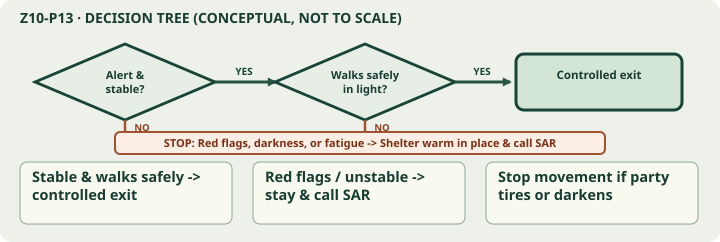

Z10-P13 · Wilderness medicine · New manuscript
Decide between walk-out, assisted exit, and staying put for SAR extraction
Match evacuation strategy to patient stability, terrain difficulty, daylight, and party capacity without creating new casualties.
When it applies · Any backcountry injury or illness where the party must choose whether to self-evacuate or summon organized rescue.
Equipment · Map, trip plan, daylight/weather forecast, communication device, and written patient trend log.

Actions
- Consider walking out ONLY when the patient is fully alert, stable across repeated checks, able to bear weight safely without worsening the injury, and daylight/weather allow a conservative exit.[T06, M10, M20]
- Stay put, shelter, insulate, and call organized SAR whenever the patient has severe bleeding, shock, altered mental status, head/spine/pelvis/femur injury, heat stroke, severe hypothermia, or cannot walk safely.[T02, T06, M05]
- Weigh nightfall, steep slippery terrain, and rescuer exhaustion honestly—two exhausted companions trying to drag an injured hiker down steep trails frequently trigger secondary falls.[E11, T06, M20]
Failure recognition · Attempting an improvised late-afternoon carryout over wet roots with an unstable patient instead of establishing warm shelter and calling SAR early.[T06, E11]
Verify · Confirm all party members agree on the evacuation threshold, shelter capacity, water/warmth reserves, and who maintains communication.[T06, E11, ED]
Stop or change course · Any deterioration in patient stability, darkness, storm onset, or rescuer fatigue halts movement immediately in favor of warm shelter and SAR activation.[T06, E05, M20]
Evidence and editorial notes
- E05 · NWS · What To Do If You're Caught in a Winter Storm (current web edition)
- Section: Outside and find shelter · Conditions: Cold, wet or windy winter conditions
Support: Block wind, stay dry and keep off cold ground. Keep exposure reduction separate from making a fire.
Limitations: Improvised windbreaks do not provide rated thermal protection or snow-load capacity. · Conflicting evidence: None; aligns with CDC-H.
Editorial note: Separates wind, ground, and moisture heat-loss pathways. · Specialist reviewer: Cold-weather shelter specialist
Primary source · checked 2026-11-24 - E11 · NPS · Hike Smart (current web edition)
- Section: Plan your hike; Stay together · Conditions: Groups on hiking routes
Support: Choose a route suited to the group's abilities and hike at a pace that keeps the group together.
Limitations: Fast hikers moving ahead at junctions is a leading driver of preventable separation. · Conflicting evidence: None; aligns with SAR prevention principles.
Editorial note: Core reference for group accountability and pacing cards. · Specialist reviewer: Group leaders and search and rescue
Primary source · checked 2026-11-24 - M05 · NIH / MedlinePlus · Shock (current web edition)
- Section: Recognizing Circulatory Shock and Positioning · Conditions: Injured or ill patient with pale cool clammy skin, rapid weak pulse, confusion, or dizziness
Support: Treat suspected shock as a life-threatening emergency: call 911, control external bleeding, keep the person warm and insulated from cold ground, and do not give food or drink.
Limitations: Field responders cannot diagnose internal hemorrhage or administer IV fluids. · Conflicting evidence: None; reinforces keeping suspected shock patients NPO and warm.
Editorial note: Core shock recognition and stabilization boundary in Z10. · Specialist reviewer: Emergency and wilderness medicine
Primary source · checked 2026-11-24 - M10 · NIH / MedlinePlus · Sprains and Strains (current web edition)
- Section: Soft-Tissue Sprain/Strain Care and Mobility Decisions · Conditions: Ankle, knee, or wrist sprains without deformity or open wound
Support: Rest the joint, support with comfortable stabilization, protect from further load, and evaluate whether the patient can safely self-evacuate or requires extraction; persistent inability to bear weight warrants clinical imaging.
Limitations: Severe sprains and undisplaced fractures cannot be reliably distinguished without X-ray. · Conflicting evidence: None; treats field assessment as functional evacuation triage, not diagnosis.
Editorial note: Prevents walking on unstable fractures under the assumption of a mild sprain. · Specialist reviewer: Sports and wilderness medicine
Primary source · checked 2026-11-24 - M20 · NIH / MedlinePlus · First Aid Overview (current web edition)
- Section: Lay First-Aid Scope, Kit Readiness, and Documentation · Conditions: Pre-trip kit preparation and remote patient monitoring
Support: Maintain an inspected, unexpired first-aid kit matched to your actual training, keep written patient observations (time, responsiveness, breathing, symptoms, interventions) for EMS handoff, and practice skills in certified courses.
Limitations: Carrying advanced medical instruments without clinical training adds risk rather than capability. · Conflicting evidence: None; aligns with ARC and NPS-K.
Editorial note: Anchors kit sizing, SOAP-style lay observation logs, and scope-of-practice cards. · Specialist reviewer: Wilderness EMS and clinical education
Primary source · checked 2026-11-24 - T02 · American Red Cross · First Aid Steps (current web edition)
- Section: First Aid Steps > Call 9-1-1 · Conditions: Lay emergency response to unresponsiveness, abnormal breathing or severe bleeding
Support: Activate EMS and get needed equipment. Follow dispatcher directions and act within training.
Limitations: Remote locations may delay EMS arrival, requiring sustained stabilization after activation. · Conflicting evidence: None; aligns with NPS-E.
Editorial note: Mandates early emergency activation and dispatcher adherence. · Specialist reviewer: EMS and wilderness medicine
Primary source · checked 2026-11-24 - T06 · NPS · Outdoor Emergency Plan (current web edition)
- Section: If you get lost or hurt; call for help · Conditions: Outdoor US emergency
Support: Communicate location, last known point, situation and needs. Stay put when unable to establish a safe route unless immediate danger requires movement.
Limitations: Cell signal is unreliable in backcountry terrain; pre-trip plans bridge communication gaps. · Conflicting evidence: None; core lost-person decision rule.
Editorial note: Foundation for stay/signal/move and dispatch handoff cards. · Specialist reviewer: Search and rescue
Primary source · checked 2026-11-24
Source lineage · NPS Emergency Plan and NIH MedlinePlus; new manuscript · Classification · New manuscript.